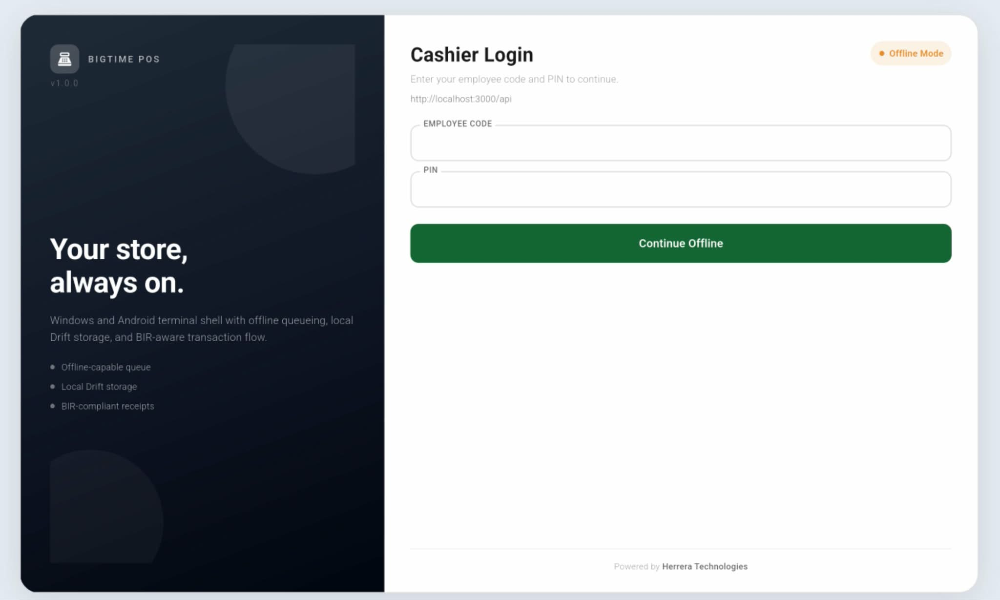

Requirement covered:
"Screenshot of the Online/Offline Indicator (if applicable)."
Prepared on: April 14, 2026
System: BIGTIME POS
Compliance Statement

Figure A: ITEM11-ONLINE-01 (Network Ready).

Figure B: ITEM11-OFFLINE-01 (Offline Mode).